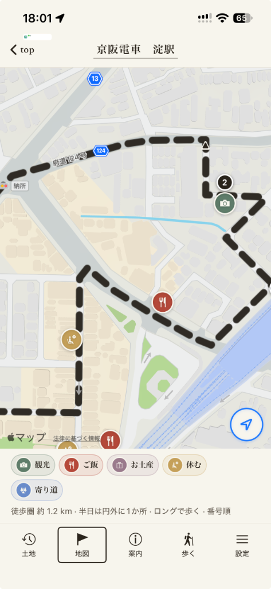
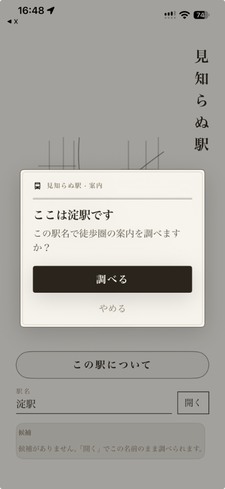
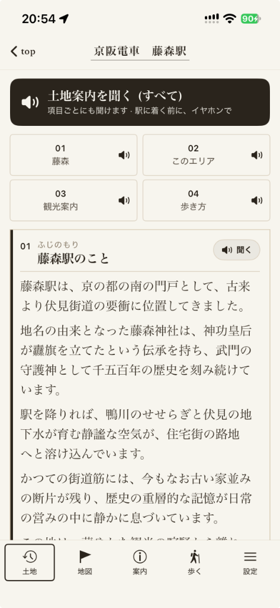

これまでの知らない駅
名前だけの点。何もない想像。降りたら立ち尽くす不安。歩く理由も、帰る輪も置かれていない。
見知らぬ駅
土地の歴史と今をガイダンスで聴きながら、小回り、大回りして散策する。
空っぽの名前だった駅を、用事のない散歩の大事な空間へ変えるアプリです。

はじまり
電車の窓に、知らない駅名が何度も流れます。気になっても、ほとんどの人は降りません。調べても有名地かチェーン店ばかりで、その駅そのものの姿は、どこにも書かれていないことが多いからです。
だから知らない駅は、地図上の点でありながら、中身のない空虚な存在——まるで存在しないもの——になっていました。降りる理由も、聴く案内も、帰れる輪も、手元にないまま通り過ぎるだけです。
このアプリの位置
見知らぬ駅は、観光地ランキングのアプリではありません。知らない駅に降り、土地の歴史と今をガイダンスで聴きながら、小回り・大回りして散策する——そのための装置です。
名前だけの点。何もない想像。降りたら立ち尽くす不安。歩く理由も、帰る輪も置かれていない。
歴史と今が耳に残る。小回りか大回りかで散策できる。何もないこと自体が、散歩のいちばん良い形になる。
日本中の名所を並べるつもりはありません。いま降りた駅から歩いて、またその駅へ帰る——その輪だけを、文章と地図と読み上げにしています。
なかみ
店が少ない駅ほど、川の向きや坂の傾き、橋や田畑の道が主役になります。行き先を探すのではなく、ガイダンスを聴きながら目を置く場所をひとつ持って、駅へ帰る。それが、このアプリの歩き方です。

開くと、いまいる駅を確かめます。通り過ぎてきただけの名前が、足元の土地になります。そこから散策がはじまります。

土地の成り立ちと、いまの空気を書いています。読み上げで聴きながら歩けるので、電車の中でも、改札を出てからも、耳で土地をたどれます。
駅を出て、少し回り道をして、同じ駅へ戻る。短い輪か、もう少し先までの輪か。どこにいても駅まで歩いて帰れるようにしています。
使い方
現在地から探すか、気になっていた駅名を入れます。
土地の案内を、読み上げのガイダンスで聴きます。電車の中でも、歩きながらでも。
短い輪か、もう少し先までの輪か。地図で順番を確かめてから出ます。
少し回り道をして、同じ道はなるべく通らず、同じ駅へ戻ります。どこにいても、駅までは歩いて帰れます。
おわりに
知らない駅は、もともと無意味だったわけではありません。手元に、聴く案内と、小回り・大回りの輪がなかっただけです。
用事のない散歩のいちばん良い形は、しばしば「何もない」ところにあります。その空白を、大事な空間として扱えるように——そう思って、少しずつ駅を増やしています。
Lagado · 見知らぬ駅